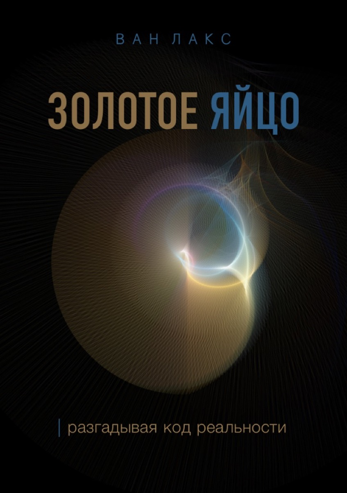
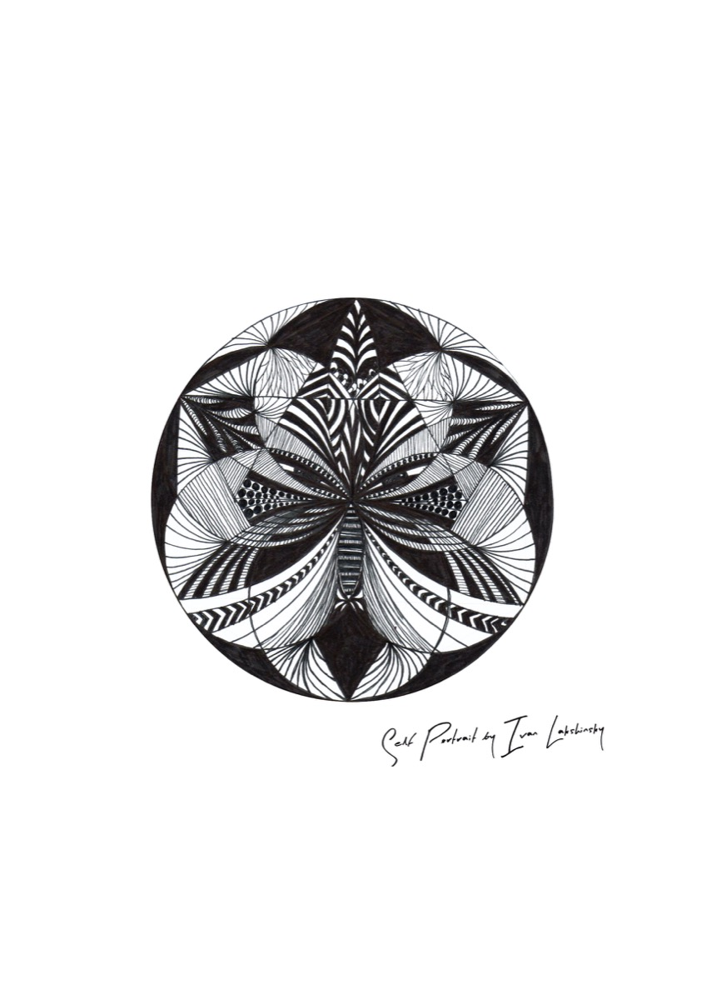
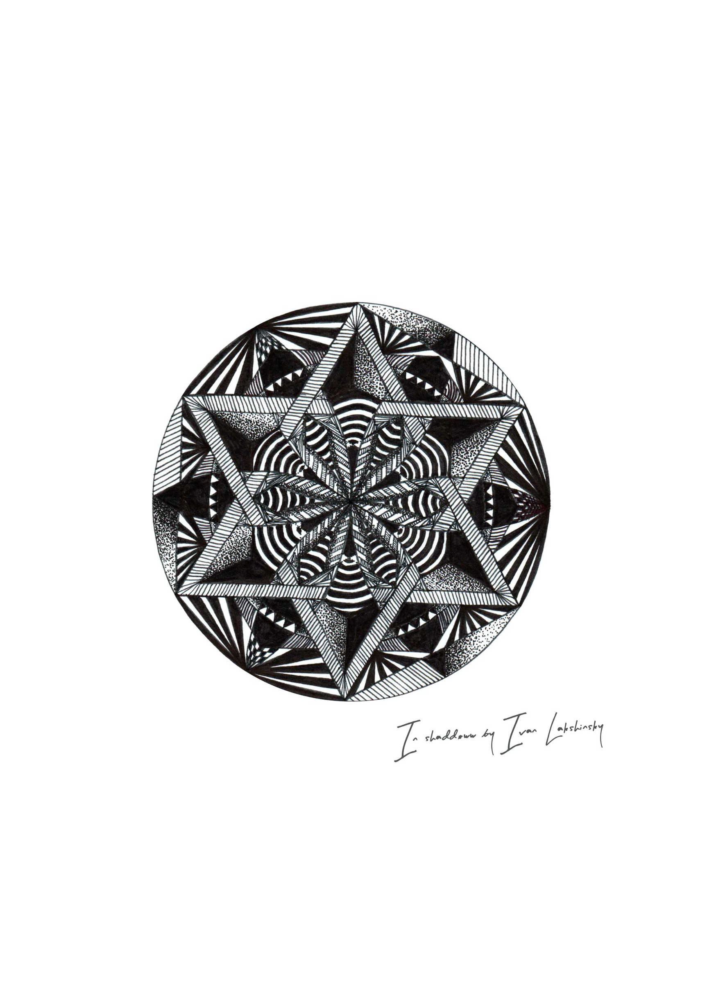
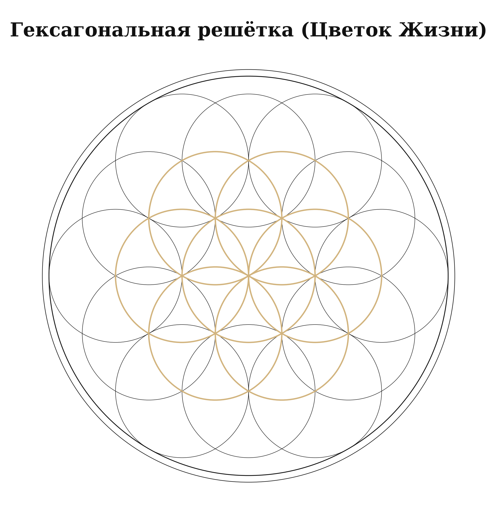
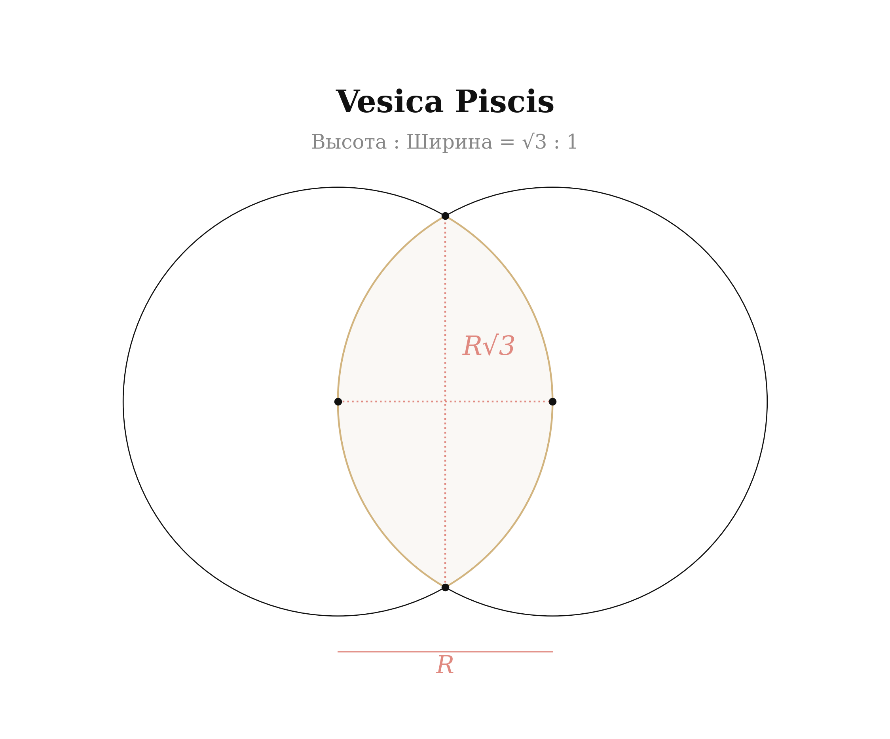
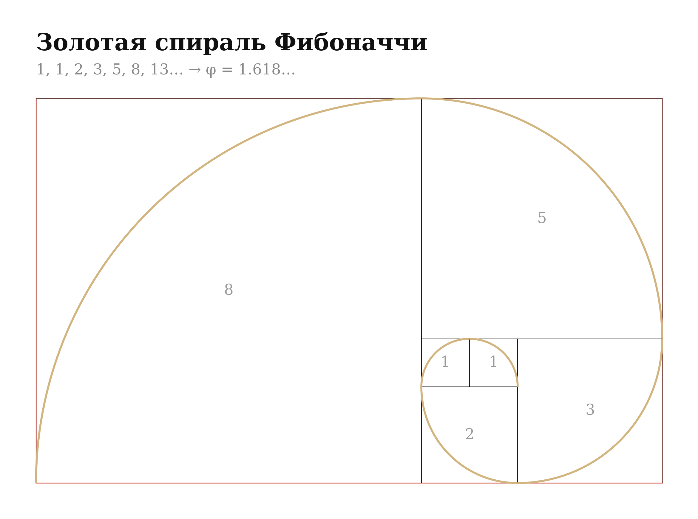
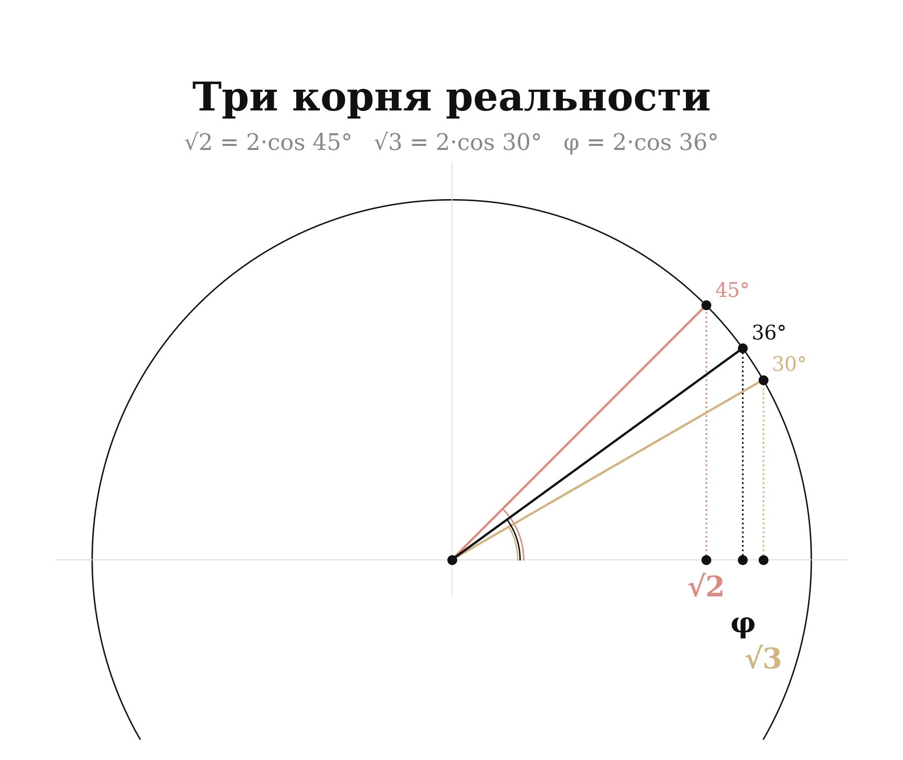
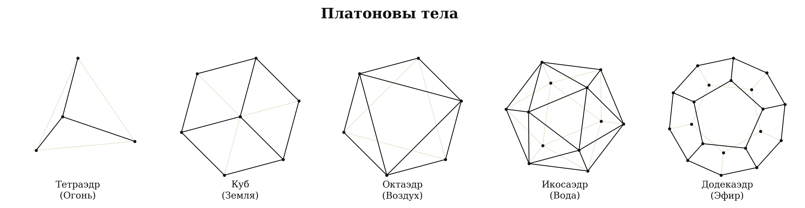
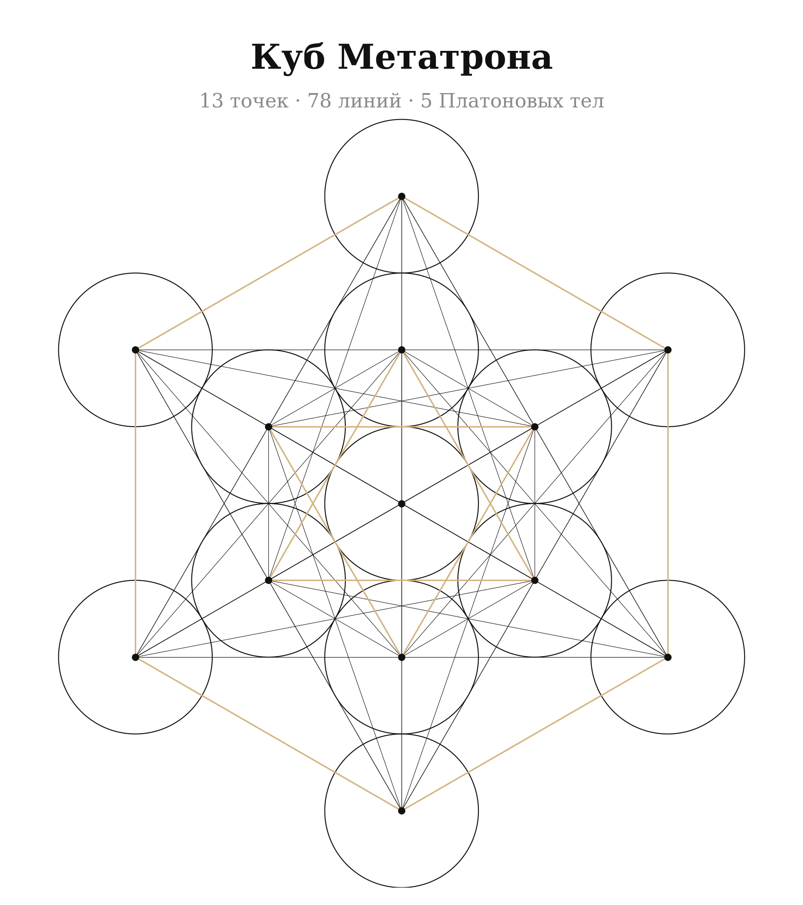
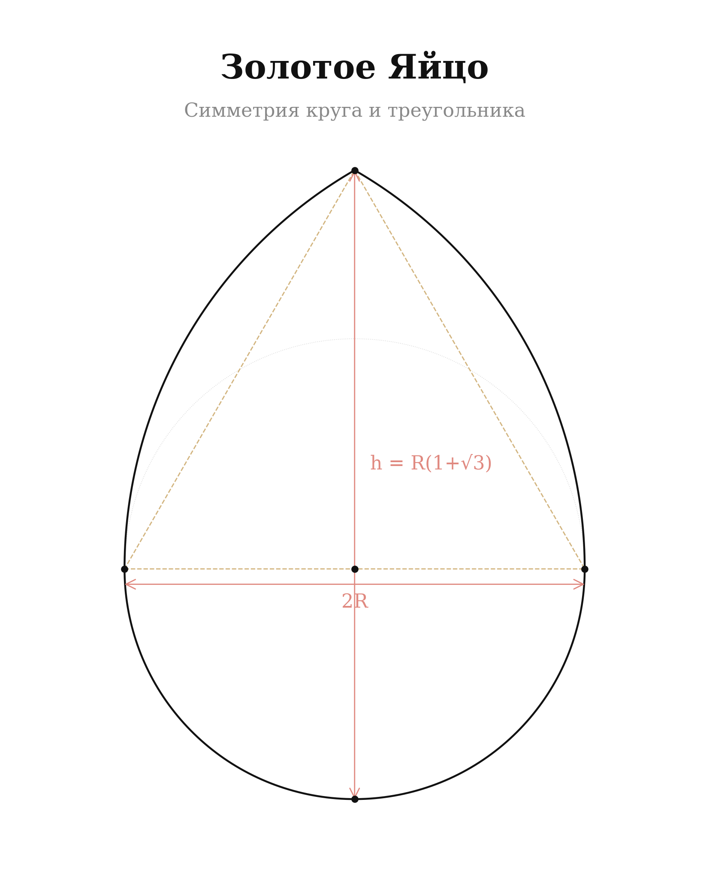

Обычные сказки, которые мы слышали в детстве, казались нам простыми и наивными. Однако если взглянуть глубже, за ними скрываются тайны мироздания, зашифрованные в образах и символах.
Вспомним «Курочку Рябу». Что это за золотое яйцо, которое снесла курочка? Почему его не смогли разбить ни дед, ни баба? Почему его в итоге разбила мышь?
Если развернуть этот сюжет в философскую плоскость, можно увидеть глубинные смыслы:
Эта сказка — код, который нам оставили предки. Она говорит:
Не всё в этом мире нужно расшифровывать. Некоторые тайны нужно просто принять, созерцать, ощущать. И тогда они сами откроются перед тобой в нужный момент.
Мир — это не единая, статичная картина. Мир — это перспектива, точка зрения, угол наблюдения.
Возьмём простую линию. Если смотреть спереди, она кажется точкой. Если смотреть сбоку — полоса. Если мы видим её в объёме — грань.
Теперь представим, что линия движется. С одной стороны, она движется из точки A в точку B. С другого ракурса — это уже плоскость, которая меняет своё положение в пространстве. А если смотреть из третьего измерения — линия может оказаться спиралью или даже бесконечной кривой, которой нет конца.
А что если всё, что ты знаешь, — это просто линия, которую ты видишь только под одним углом?
Хочу быть с тобой, дорогой читатель, предельно честным и открытым. Моя персона долгое время оставалась в тени для многих из моего окружения.
Я долгое время считал, что суть познания мира — в его разборе. Мы привыкли анализировать реальность, расщеплять её на части, стремиться проникнуть в механизмы. Но однажды я остановился. И спросил себя: а что, если мир вовсе не требует объяснений? Что, если он просит не анализа, а простого, искреннего созерцания?
Когда мне было двенадцать, я покинул Россию и оказался в закрытой британской школе. Для ребёнка это был хаос — чужой язык, чужие правила, чужой мир. В тринадцать лет я написал первое произведение — этюд продолжительностью в двадцать минут, держа всю композицию в голове, без единой ноты на бумаге. Музыка спасала меня от хаоса.
Эта книга — не просто собрание мыслей. Это путь, длиною в мою жизнь. Путь наблюдателя.
Вопрос, который я задаю себе и тебе, читатель: что ты выберешь — разбить яйцо в поисках смысла или принять его тайну?
Эта книга устроена как спираль — каждый виток углубляет понимание.
Давай вместе приоткроем завесу над этим миром.


«Правды не существует. Мы — то, во что готовы поверить.»
Эти слова раскрывают суть нашего восприятия. Нам кажется, что мир перед нами реален, что мы видим его таким, каков он есть. Но в действительности каждый из нас смотрит на него через призму убеждений, знаний, эмоций и опыта.
Иллюзия пронизывает всё. Мы верим в деньги, но это всего лишь бумага. Мы признаём границы государств, но на Земле нет нарисованных линий. То, во что мы верим, становится нашей реальностью.
Мир напоминает матрёшку, в которой один слой скрыт за другим. Внешняя оболочка — материальный мир. Под ней — информация. Глубже — убеждения. Затем — эмоции. И в самом центре — точка осознания, чистое восприятие.
Квантовая физика добавила научный вес. Эксперимент с двойной щелью показал: частица ведёт себя по-разному в зависимости от того, наблюдают за ней или нет. Возможно, мы не просто наблюдаем реальность — мы создаём её.
«На самом деле через сны мы учимся управлять этой нашей проявленной реальностью.»
Закрой глаза. Вспомни сон, который был настолько ярким, что, проснувшись, ты не сразу понял — где реальность? Во сне ты видел, слышал, чувствовал запахи, прикосновения. Но ведь твои глаза были закрыты. Кто же рисовал тебе этот мир?
Ум. Только ум.
Каждую ночь мы покидаем мир привычных законов и отправляемся в измерение, где возможно всё. Мы летаем, проходим сквозь стены, говорим с теми, кого уже нет. Но если сознание способно строить такие реальности во сне, чем этот процесс отличается от того, что происходит, когда мы бодрствуем?
Фильм Кристофера Нолана «Начало» (Inception) блестяще исследует эту идею: сон внутри сна — вложенные слои реальности, каждый из которых кажется абсолютно настоящим.
Истинная мудрость не в том, чтобы осознать, что реальность — это сон, а в том, чтобы пробудиться внутри него и начать осмысленно творить свою жизнь.
«Смыслы — это самое важное, что есть в нашей жизни»
Каждое утро мы просыпаемся не просто так, а потому что верим в смысл нового дня. Мы работаем, потому что считаем деньги важными. Мы строим отношения, потому что ощущаем ценность любви.
Но что, если все эти смыслы не объективны? Что, если деньги — это лишь цифры в системе? Что, если любовь — это биохимия?
Деньги — один из самых мощных примеров того, как коллективная вера становится реальностью. Бумажная купюра сама по себе не стоит ничего. Вся система работает лишь потому, что мы коллективно верим: этот символ равен ценности.
Кто управляет смыслами, тот управляет восприятием.
Голливуд — один из самых мощных генераторов смыслов в истории. Через кино миллиардам людей транслируются модели поведения, ценности, страхи и мечты. Социальные сети довели это до совершенства: алгоритмы анализируют твои реакции и выстраивают ленту так, чтобы максимально захватить внимание. Ты не потребляешь контент — контент потребляет тебя.
«Всё, что ты видишь, слышишь, чувствуешь — это часть спектакля. Чтобы ты никогда не задумался, что происходит за его кулисами.»
Мир словно окутан дымкой сна. Мы живём в реальности, но видим её через призму иллюзий, которые удерживают наше внимание внутри игры.
Чтобы мы спали с открытыми глазами, они создали синематограф. Чтобы уши пребывали в приятном дурмане, они создали музыку. Для тех, кто ищет удовольствие в еде, они сделали вкусы изощрёнными.
Но что, если снизить значимость всего этого? Не отвергать, не бороться, а просто осознать игру. Смотреть, но не теряться в образах. Слушать, но не утопать в звуках. Чувствовать, но не становиться рабом чувств. Мыслить, но не отождествляться с мыслями.
Тогда реальность меняется. Мир начинает играть другим светом.
«Все есть структура. Без структуры нет формы. Без формы нет материи.»
Сакральная геометрия — это древняя наука, изучающая символическое значение геометрических форм. Она рассматривает, как определённые углы и фигуры отражают фундаментальные принципы мироздания.
Пифагор утверждал: «Числа — это сущность всех вещей.» Число 3 символизирует творение. Число 7 — гармонию бытия. Число 12 управляет временем и цикличностью.
Галилео Галилей говорил: «Геометрия — это язык, на котором говорит Бог.» Спираль Фибоначчи отражается в раковинах и галактиках; фракталы повторяются в листьях, лёгких и кровеносной системе; шестигранники проявляются в пчелиных сотах и кристаллических решётках.

Я провёл тщательный анализ числовых значений в Библии, сопоставив их с сакральной геометрией. Результат меня поразил: числа образуют точный математический каркас.
Семь дней Творения — шесть кругов вокруг одного центрального формируют «Семя Жизни». 6 дней + 1 день покоя = геометрическая константа.
Ковчег Ноя — 300 × 50 × 30 локтей. Ширина/высота = 5/3 ≈ 1,667, приближение к золотому сечению φ = 1,618.
Ковчег Завета — 2,5 × 1,5 × 1,5 локтей. Длина/ширина = 5/3 — та же самая пропорция.
Храм Соломона — его сердце, Святое Святых — это идеальный куб: 20 × 20 × 20. Тот же куб описан в Новом Иерусалиме.
Число 144 000 — 144 — число Фибоначчи, причём единственное, являющееся точным квадратом. И стоит оно на 12-й позиции ряда Фибоначчи.
√2 — диагональ квадрата. Использовалась в готических соборах и формате бумаги A4.
√3 — высота равностороннего треугольника и пропорция Vesica Piscis — «матки мироздания».

φ (фи) — золотое сечение ≈ 1,618. Скрыто в раковине наутилуса, рукавах галактик, семечках подсолнуха, ДНК, Парфеноне, скрипках Страдивари.

Все три корня связаны через π: √2 = 2·cos(45°), √3 = 2·cos(30°), φ = 2·cos(36°). Круг содержит в себе всё.

Во всём бесконечном пространстве существует только пять идеально правильных объёмных тел — Платоновы тела:

13 точек. 78 линий. Один чертёж, содержащий все пять Платоновых тел.

Яйцо — символ жизни и рождения — построено по тем же законам. Возьми круг. Впиши равносторонний треугольник. Из его вершин проведи дуги. Результат — идеальный контур яйца, содержащий в себе и круг, и треугольник, и √3.

Три пропорции. Пять тел. Один чертёж. Вот формулы, на которых стоит реальность. Соты, снежинки, кристаллы, цветы, спирали, звёзды — всё говорит на одном языке. И этот язык — геометрия.
«В начале было Слово.»
Мы привыкли думать, что язык — это просто инструмент общения. Но что, если слова — это нечто большее? Слово несёт вибрацию, а вибрация создаёт форму.
Эрнст Хладни доказал, что звуковые вибрации создают геометрические узоры — достаточно рассыпать песок на металлическую пластину и провести по ней смычком, чтобы увидеть, как хаос мгновенно складывается в совершенные структуры.
Во всех древних традициях слово имело сакральное значение. Веды, Коран, Библия — все эти тексты работают как активные коды, трансформирующие сознание.
Язык — это ключ к формированию реальности. Каждое слово несёт заряд. Говори осознанно, произноси слова, несущие силу и гармонию, и ты увидишь, как меняется не только твоё сознание, но и сам мир вокруг.
«Как вверху, так и внизу; как внизу, так и вверху.»
Атом повторяет структуру солнечной системы. Нейронная сеть мозга неотличима от карты Вселенной. Спираль ДНК — та же спираль галактики.
Фракталы — каждая часть содержит целое. Каждый уровень отражает все остальные.
Если микрокосм отражает макрокосм, то изменение внутри тебя — это изменение в мире. Не метафорически. Буквально.
Библия говорит: «Не знаете ли, что тела ваши суть храм?» Позвоночник человека состоит из 33 позвонков. Иисус был распят в 33. Голгофа переводится как «череп». Распятие происходит в голове.
В нашем мозге приблизительно 100 миллиардов нейронов — столько же, сколько звёзд в нашей Галактике. Мы — не «подобие» Вселенной. Мы есть Вселенная в миниатюре.
«Представьте, что световые лучи, несущие фотоны, наполнены разнообразной информацией, проникающей лишь в те структуры, которые готовы её принять.»
Что, если свет несёт не только энергию, но и информацию? Каждый фотон, коснувшийся твоей кожи, несёт больше, чем тепло. Он несёт ритм Вселенной.
В этой Вселенной есть и обратная сторона — тёмная материя. Она не светится. Но её влияние ощутимо. Она удерживает галактики. Около 85% массы Вселенной состоит из тёмной материи — невидимой, неосязаемой, но реальной.
Свет и тьма — не противоположности. Они два крыла одной птицы. Свет несёт информацию; тьма создаёт пространство для её восприятия.
Конец Части II — Код
Вы дочитали бесплатный фрагмент. Полная книга включает Части III–V: Энергия, Гармония и Практика — с Формулой МАГА и 47 Золотыми мыслями.